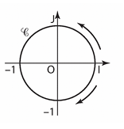
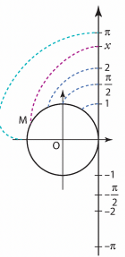
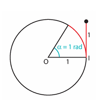
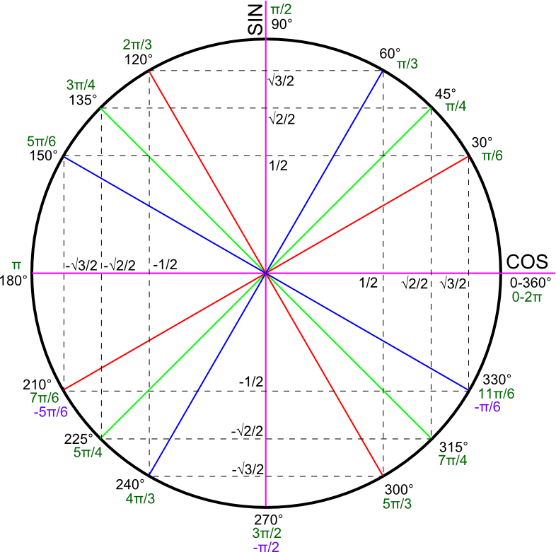

Chapitre 2 - Le cercle trigonométrique
I - Repérage sur le cercle trigonométrique
1) Qu'est-ce que le cercle trigonométrique ?
Définition : Dans un repère orthonormé \((O, I, J)\), le cercle trigonométrique \(\mathcal{C}\) est le cercle de centre \(O\) et de rayon 1.
Il possède une orientation : le sens direct (ou sens positif, ou sens trigonométrique), qui est l'opposé de celui des aiguilles d'une montre.
Remarque : Le périmètre de ce cercle est \(P = 2\pi R = 2\pi \times 1 = 2\pi\).
Exemple : L'arc \(IJ\) mesure \(2\pi \times \frac{1}{4} = \frac{\pi}{2}\).

2) Comment repérer un point sur le cercle ?
Pour repérer un point \(M\) sur le cercle trigonométrique, on "enroule" autour du cercle un axe vertical orienté vers le haut, gradué, d'origine \(I\).
On peut alors associer un réel \(x\) à ce point \(M\), \(x\) étant l'abscisse d'un point de l'axe qui vient se superposer au point \(M\).
On dit que \(M\) est le point-image de \(x\), noté \(M_x\).

3) Repérages d'un même point
Propriétés :
- Un point \(M\) du cercle est repéré par une infinité de réels. Si \(x\) est l'un d'entre eux, les autres sont de la forme \(x + 2k\pi\) avec \(k \in \mathbb{Z}\).
- Deux réels \(x_1\) et \(x_2\) repèrent le même point si et seulement si \(x_1 - x_2\) est un multiple de \(2\pi\).
• \(\frac{7\pi}{3} - \frac{\pi}{3} = \frac{6\pi}{3} = 2\pi\) (un tour complet).
• \(\frac{\pi}{3} - (-\frac{5\pi}{3}) = \frac{6\pi}{3} = 2\pi\).
II - Longueur d'arc et radian
1) Le radian
Définition : Soit \(M\) un point du cercle repéré par un réel \(x \in [0 ; 2\pi]\). On dit que \(x\) est une mesure de l'angle \(\widehat{IOM}\) en radians
Il y a proportionnalité entre la mesure en degrés et la mesure en radians.
| Angle en degrés (°) | 180 | 90 | 45 | 60 | 360 |
| Angle en radians (rad) | \(\pi\) | \(\frac{\pi}{2}\) | \(\frac{\pi}{4}\) | \(\frac{\pi}{3}\) | \(2\pi\) |
2) Longueur d'arc de cercle
Propriété : La longueur \(L\) d'un arc de cercle de rayon \(R\) et d'angle au centre \(\alpha\) (en rad) est :
\(L = \alpha \times R\)

III - Fonctions trigonométriques : cosinus et sinus
1) Définition et premières propriétés
Soit \(x\) un réel et \(M\) le point du cercle trigonométrique repéré par \(x\).
- Le cosinus de \(x\), noté \(\cos(x)\), est l'abscisse de \(M\).
- Le sinus de \(x\), noté \(\sin(x)\), est l'ordonnée de \(M\).
Le point \(M\) a donc pour coordonnées \((\cos(x) ; \sin(x))\).
Propriétés : Pour tout réel \(x\) :
- \(-1 \leq \cos(x) \leq 1\) et \(-1 \leq \sin(x) \leq 1\)
- \(\cos^2(x) + \sin^2(x) = 1\)
2) Valeurs remarquables
Il est indispensable de connaître les valeurs suivantes pour les angles usuels:
| Angle en degrés | 0° | 30° | 45° | 60° | 90° |
| Réel \(x\) (rad) | 0 | \(\frac{\pi}{6}\) | \(\frac{\pi}{4}\) | \(\frac{\pi}{3}\) | \(\frac{\pi}{2}\) |
| \(\cos(x)\) | 1 | \(\frac{\sqrt{3}}{2}\) | \(\frac{\sqrt{2}}{2}\) | \(\frac{1}{2}\) | 0 |
| \(\sin(x)\) | 0 | \(\frac{1}{2}\) | \(\frac{\sqrt{2}}{2}\) | \(\frac{\sqrt{3}}{2}\) | 1 |
